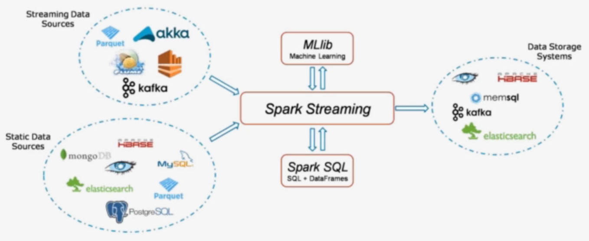

1、sparkStreaming概述
1.1 SparkStreaming是什么
它是一个可扩展，高吞吐具有容错性的流式计算框架
吞吐量：单位时间内成功传输数据的数量
之前我们接触的spark-core和spark-sql都是处理属于离线批处理任务，数据一般都是在固定位置上，通常我们写好一个脚本，每天定时去处理数据，计算，保存数据结果。这类任务通常是T+1(一天一个任务)，对实时性要求不高。

但在企业中存在很多实时性处理的需求，例如：双十一的京东阿里，通常会做一个实时的数据大屏，显示实时订单。这种情况下，对数据实时性要求较高，仅仅能够容忍到延迟1分钟或几秒钟。

实时计算框架对比
Storm
- 流式计算框架
- 以record为单位处理数据
- 也支持micro-batch方式（Trident）
Spark
- 批处理计算框架
- 以RDD为单位处理数据
- 支持micro-batch流式处理数据（Spark Streaming）
对比：
- 吞吐量：Spark Streaming优于Storm
- 延迟：Spark Streaming差于Storm
1.2 SparkStreaming的组件
- Streaming Context
- 一旦一个Context已经启动(调用了Streaming Context的start()),就不能有新的流算子(Dstream)建立或者是添加到context中
- 一旦一个context已经停止,不能重新启动(Streaming Context调用了stop方法之后 就不能再次调 start())
- 在JVM(java虚拟机)中, 同一时间只能有一个Streaming Context处于活跃状态, 一个SparkContext创建一个Streaming Context
- 在Streaming Context上调用Stop方法, 也会关闭SparkContext对象, 如果只想仅关闭Streaming Context对象,设置stop()的可选参数为false
- 一个SparkContext对象可以重复利用去创建多个Streaming Context对象(不关闭SparkContext前提下), 但是需要关一个再开下一个
- DStream (离散流)
- 代表一个连续的数据流
- 在内部, DStream由一系列连续的RDD组成
- DStreams中的每个RDD都包含确定时间间隔内的数据
- 任何对DStreams的操作都转换成了对DStreams隐含的RDD的操作
- 数据源
- 基本源
- TCP/IP Socket
- FileSystem
- 高级源
- Kafka
- Flume
- 基本源